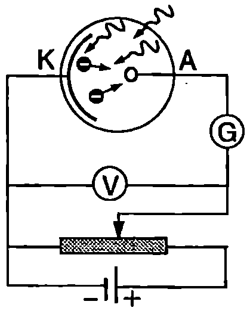
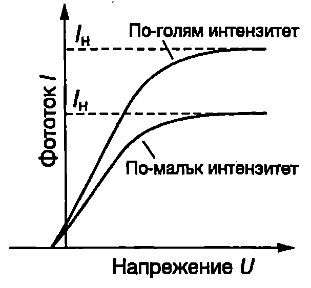
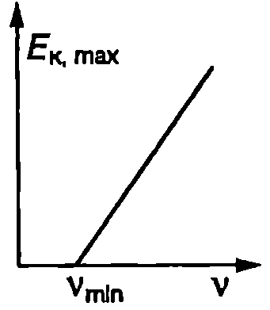

Отделянето на електрони от веществото в резултат на поглъщане на светлина се нарича фотоелектричен ефект или накратко фотоефект. Фотоефект се наблюдава както в метали, така и в диелектрици и полупроводници. Различават външен фотоефект и вътрешен фотоефект. При външния фотоефект отделените електрони напускат повърхността на веществото и преминават в друга среда или във вакуум. Фотоефектът се нарича вътрешен, когато електроните не напускат веществото, а под действие на светлината само преминават от едно енергетично състояние в друго, при което се променят електричните свойства на веществото. Вътрешният фотоефект намира широко приложение в полупроводниковите фотоелектрични прибори (фотосъпротивления, фотодиоди, слънчеви батерии и др.). В този параграф ще се ограничим с разглеждането само на външния фотоефект при металите, който не само има голямо практическо значение, но заема и важно място в развитието на квантовата теория на светлината.
Основни закономерности на фотоефекта

`Фиг. 101.1

`Фиг. 101.2`
Фотоефектът е открит от Херц през 1887 година. Опитът показва, че фотоефектът силно зависи от състоянието на осветената повърхност. Затова при изследването му се използват чисти повърхности, поставени във вакуум. На Фиг. \ref{fig:101.1} е показана принципна схема на опитна постановка за изучаване на фотоефекта. Във вакуумиран стъклен или кварцов балон са поставени два метални електрода. Такова устройство се нарича фотоклетка. Катодът на фотоклетката е свързан към отрицателния полюс на източник на постоянно ЕДН. В отсъствие на осветление (на тъмно) във веригата не протича ток, тъй като в пространството между катода и анода няма свободни токови носители. При осветяване на катода от него се избиват фотоелектрони, които се ускоряват от приложеното напрежение и достигат до анода. Във веригата протича фототок, който се измерва с чувствителния галванометър G. На Фиг. \ref{fig:101.2} е показана зависимостта на фототока $I$ от приложеното напрежение $U$ при два различни интензитета на падащата върху катода монохроматична светлина. От волтамперните характеристики се вижда, че фототокът нараства при увеличаване на приложеното напрежение. При определено напрежение всички електрони, отделени от повърхността на катода, достигат до анода. Затова при по-нататъшно увеличаване на напрежението токът остава постоянен- това е т. нар. ток на насищане $I_\text{н}$. Токът на насищане нараства при увеличаване интензитета на светлината, което по-казва, че при по-голям интензитет от катода се отделят повече електрони. Ако се подаде обратно напрежение $U$ (положителният полюс на източника се свързва към катода), електричното поле между електродите променя посоката си и се стреми да върне фотоелектроните обратно към катода. Когато електрон измине разстоянието от катода до анода, електричните сили извършват отрицателна работа с големина $eU$ ($e$ е големината на заряда на електрона) и кинетичната енергия на електроните намалява. Фототокът също намалява, защото само електроните, чиято кинетична енергия е по-голяма от $eU$, успяват да достигнат до анода (останалите под действието на електричните сили се връщат обратно към катода). При определена стойност на обратното напрежение $U = U_c$, наречена спирачно напрежение, фототокът става равен на нула. От закона за запазване на енергията следва равенството $$eU_c = E_{k,\max}, $$ където $\displaystyle E_{k,\max} = \frac{mv_{\max}^2}{2}$ е максималната кинетична енергия на фотоелектроните ($m$ е масата на електрона, а $v_{\max}$ максималната скорост, с която електроните напускат катода). В резултат на многобройни експериментални изследвания са установени следните основни закономерности на фотоефекта:
-
При осветяване с монохроматична светлина броят на отделените за единица време от дадена повърхност електрони е правопропорционален на интензитета на светлината.
-
За всеки метал съществува червена граница на фотоефекта, т.е. максимална дължина на вълната $\lambda_{\max}$ (или съответно минимална честота $\nu_{\min} = c/\lambda_{\max}$) на светлината, при която все още е възможно отделяне на фотоелектрони. Ако $\lambda>\lambda_{\max}$, фотоефект не се наблюдава дори при голям интензитет на падащата светлина.
-
Максималната кинетична енергия $E_{k,\max}$ на фотоелектроните не зависи от интензитета на светлината. $E_{k,\max}$ нараства линейно при увеличаване честотата $\nu$ на падащата светлина (Фиг. \ref{fig:101.3}).

`Фиг. 101.3`
4. Фотоелектрони се отделят практически едновременно с осветяването (по-малко от $10^{-9}$ s след осветяването на повърхността), дори когато интензитетът на светлината е много малък.
Възможно ли е вълновата електромагнитна теория на Максуел да обясни закономерностите на фотоефекта? Според теорията на Максуел свободните електрони, които се намират близо до повърхността на метала, извършват принудени трептения в електричното поле на падащата електромагнитна вълна. Те поглъщат енергия и амплитудите на трептене нарастват. Когато енергията на трептене на даден електрон достигне определена критична стойност, електронът преодолява електричните сили на привличане към положителните йони на метала и се откъсва от повърхността на метала. Ако такъв модел е верен, следва да се очаква, че максималната кинетична енергия $E_{k,\max}$ на фотоелектроните ще е пропорционална на интензитета на падащата светлина: при голям интензитет на светлината електричното поле на вълната е по-силно и електроните получават от него по-голяма енергия. Опитът обаче показва, че $E_{k,\max}$ изобщо не зависи от интензитета на светлината. Освен това вълновата теория не е в състояние да обясни съществуването на червена граница на фотоефекта. От нея следва, че фотоефект трябва да възниква при всяка дължина на вълната, стига интензитетът на светлината да е достатъчно голям. От вълновата теория също така следва, че фотоелектроните трябва да се появяват със закъснение. Особено при малък интензитет на светлината на електрона е нужно време, за да “натрупа” необходимата за напускане на метала енергия.
Следователно основните закономерности на фотоефекта не могат да се обяснят от електромагнитната теория на Максуел. Това изисква да се променят схващанията за природата на светлината.
Уравнение на Айнщайн
През 1905 г. излиза статията на Айнщайн “За една евристична гледна точка, отнасяща се до възникването и превръщането на светлината”, в която той обяснява закономерностите на фотоефекта, изхождайки от хипотезата за светлинните кванти. Айнщайн стига до извода, че светлината не само се излъчва, но и се поглъща на кванти. При облъчване на веществото електроните не поглъщат светлина непрекъснато, а на порции. Електронът изцяло поглъща една порция (квант) енергия $E = h\nu$. При всички разглеждания ще предполагаме, че даден електрон поглъща само един квант. При нормален интензитет на светлината вероятността един електрон едновременно да погълне два или повече кванта е пренебрежимо малка. Ще отбележим, че процеси на едновременно поглъщане на няколко кванта са наблюдавани в опити със свръхмощни лазерни импулси.
Да означим с $A_e$ отделителната работа — минималната енергия, която трябва да получи електронът, за да се освободи и напусне повърхността на метала. Ако $h\nu < A_e$, енергията на един квант не е достатъчна за отделяне на електрон и фотоефект не се наблюдава. Равенството $$\nu_{\min} = \frac{A_e}{h}\text{ или }\lambda_{\max} = \frac{c}{\nu_{\min}} = \frac{ch}{A_e} $$ определя червената граница на фотоефекта.
Фотоефектът е безинерционен, защото актовете на поглъщане на светлинните кванти се извършват практически мигновено.
За електроните с максимална кинетична енергия от закона за запазване на енергията при поглъщане на светлинен квант следва равенството $$h\nu = A_e + E_{k,\max} $$ наречено уравнение на Айнщайн за външния фотоефект.
От уравнения \eqref{eq:101.1} и \eqref{eq:101.3} за спирачното напрежение се получава $$U_c = \frac{h}{e}\nu - \frac{A_e}{e}, $$ т.е. спирачното напрежение $U_c$, е линейна функция на честотата и на падащата светлина. През 1916 година американският физик Роберт Миликен (1868-1953) получава експериментално зависимостта $U_c(\nu)$ при фотоефект от чиста повърхност на метала натрий. Нейният линеен характер потвърждава правилността на уравнението на Айнщайн. По наклона на правата линия Миликен определя отношението $h/e$ на константата на Планк към заряда на електрона.
Фотони
През 20-те години на нашия век се провеждат серия от експерименти, които убедително потвърждават съществуването на светлинните кванти. Според съвременните представи светлинните кванти, които през 1926 година били наречени фотони, се разглеждат като частици без маса на покой ($m_0 = 0$), движещи се със скоростта на светлината с. Подобно на останалите частици, фотоните притежават енергия и импулс. Импулсът на фотон с енергия $E = h\nu$ може да се изрази от релативисткия инвариант на енергията и импулса \eqref{eq:99.11} на стр.243, като се отчете, че енергията на по-кой на фотона е нула ($E_0 = 0$). Получава се $$p = \frac{E}{c} = \frac{h\nu}{c} = \frac{h}{\lambda}. $$
Фотони и зрение
Чувствителността на човешкото око е изключително голяма. Многобройните експериментални изследвания показват, че на прага на зрителното усещане съответстват от 2 до 7 фотона, които попадат върху ретината за една секунда. Окото не е чувствително към отделния фотон. За да протекат фотохимични реакции и възникне зрително усещане, необходимо е последователно поглъщане в кратък интервал от време поне на два фотона. Какво би станало, ако окото реагираше отделно на всеки фотон? Самото око излъчва като черно тяло с температура 310 К (телесна температура). При такава ниска температура, съгласно със закона на Вин, максимумът на излъчването е в инфрачервената област ($\lambda_{\max} = 9$ $\mu$m), към която окото не е чувствително. Същестува обаче много слабо излъчване и във видимата област, чийто интензитет може да се определи с помощта на формулата на Планк. Пресмятанията показват, че за една секунда върху ретината попада средно по един фотон от видимата област, получен от топлинното излъчване на окото. Следователно, ако окото беше чувствително към отделните фотони, собственото му топлинно излъчване щеше да създава фон, който да пречи на зрението.
\begin{psexample}[label=ex:101.1]{}{} В оптиката дължината на вълната $\lambda$ на светлината се измерва в нанометри, а енергията $E$ на фотоните в електронволти. За бързо преминаване от едната величина към другата величина е удобно да се използва формулата $$\lambda E = hc = 1240~\mathrm{nm\cdot eV}.$$
а) Докажете това съотношение.
- Колко електронволта е енергията на фотоните на светлината, към която човешкото око е най-чувствително ($\lambda = 560$ nm)?
в) Червената граница на фотоефекта за натрия е при $\lambda_{\max} = 504$ nm. Колко електронволта е отделителната работа за натрия? \end{psexample}
Решение
а) В произведението $\lambda E$ заместваме $E = h\nu = h(c/\lambda)$ и получаваме
$$\begin{aligned}
\lambda E= \lambda \frac{hc}{\lambda} = hc&=(6,!626.10^{-34} \mathrm{J\cdot s}) (2,!998.10^8\mathrm{\frac{m}{s}})= \
&= 1,!986.10^{-25}~\mathrm{m\cdot J}
\end{aligned}$$
За да преминем от мерни единици m.J в единици nm.eV, трябва да заместим $1~\mathrm{m} = 1.10^9~\mathrm{nm}$ и $\displaystyle 1~\mathrm{J} = \frac{1}{1,!602.10^{-19}}\mathrm{eV}$. Получаваме
$$\lambda E = hc = (1986.10^{-25}) (1.10^9\mathrm{nm}) (\frac{1}{1,!602.10^{-19}}\mathrm{eV}) =1240\mathrm{nm \cdot eV}.$$
б) За да определим енергията на фотона, ще използваме доказаното в точка а) съотношение $$E = h\nu = \frac{hc}{\lambda} = \frac{1240~\mathrm{nm\cdot eV}}{560~\mathrm{nm}} = 2,!21~\mathrm{eV}$$
в) Отделителната работа определяме от уравнение \eqref{eq:101.2}:
$$A = \frac{hc}{\lambda_{\max}} = \frac{1240~\mathrm{nm\cdot eV}}{504~\mathrm{nm}} = 2,!46~\mathrm{eV}.$$
\begin{psexample}[label=ex:101.2]{}{} Като използвате законите за запазване на енергията и импулса докажете, че не е възможен фотоефект от свободен електрон, т.е. свободен електрон не може да погълне фотон. \end{psexample}
Решение
Актовете на излъчване, поглъщане и разсейване на фотони могат да се разглеждат по същия начин, както разпадането, сливането или разсейването (удар) на “обичайни” частици, т.е. на частици с маса на покой. Да допуснем, че електрон, който първоначално е в покой, поглъща фотон с енергия $E_\phi$ и импулс $p_\phi = E_\phi/c$. Преди поглъщането релативистката енергия на електрона е равна на неговата енергия на покой $E_0$. В резултат на поглъщането електронът получава кинетична енергия $E_k$, и импулс $\displaystyle p = \frac{1}{c} \sqrt{E_k(E_k + 2E_0)}$. От законите за запазване на енергията и импулса следват равенствата $$E_\phi=E_k\text{ и }p_\phi = p.$$
Тези две равенства обаче не могат да бъдат изпълнени едновременно. Действително, ако във второто от тях изразим импулсите $p_\phi$ и $p$ чрез енергиите $E_\phi$, $E_k$ и $E_0$, ще получим $$E_{\phi} = \sqrt{E_{\kappa}(E_{\kappa} + 2E_0)}.$$
Заместваме $E_k = E_\phi$ и стигаме до уравнение, което има решение само при $E_{\phi}$ = 0 или $E_\phi = \infty$. И двете решения нямат смисъл. Стигаме до извода, че свободен електрон не може да погълне фотон. Такъв процес би противоречал на законите за запазване на енергията и импулса.
При фотоефект в поглъщането на фотони освен отделните електрони участва и кристалната решетка, т.е. кристалът като цяло. Електронът получава практически цялата енергия на фотона и импулс, съответстващ на тази енергия. Кристалната решетка, която има много по-голяма маса от електрона, практически не получава енергия, но получава импулс, който е приблизително равен по големина и има противоположна посока на импулса на електрона. Векторната сума от импулсите на електрона и решетката има малка стойност, равна на импулса на фотона. Следователно фотоефектът е възможен благодарение на участието на кристала като цяло.
Задачи
-
Колко електронволта е енергията на фотоните, съответстващи на двете граници на видимата област ($\lambda_1 = 400~\mathrm{nm}$ и $\lambda_2 = 760~\mathrm{nm}$)?
-
Отделителната работа за калия е 2,24 eV. При каква дължина на вълната се намира червената граница на фотоефекта за този метал?
-
Червената граница на фотоефекта за цезиев катод съответства на дължина на вълната $\lambda_{\max} = 680~\mathrm{nm}$. Ще предизвика ли фотоефект светлина с честота $\nu = 5.10^{14}~\mathrm{Hz}$ ?
-
Максималната скорост, с която се отделят електрони от катода на фотоклетка, е $6.10^5$ m/s. Колко е спирачното напрежение?
-
Литият е метал с отделителна работа 2,3 eV. Колко е максималната кинетична енергия, с която фотоелектроните напускат повърхността на образец от литий, когато той се освети с монохроматична светлина с дължина на вълната 450 nm?
-
Фотоклетка се облъчва с монохроматична светлина с дължина на вълната 440 nm. Определете отделителната работа за метала, от който е изготвен катодът на фотоклетката, ако спирачното напрежение е 0,6 eV.
-
В лабораторията студент насочва светлинния сноп от учебния лазер към отсрещната стена. Колко фотона попадат върху стената за 1 s? Мощността на лазера е P = 1 mW, а дължината на вълната на излъчената светлина е $\lambda = 633$ nm.